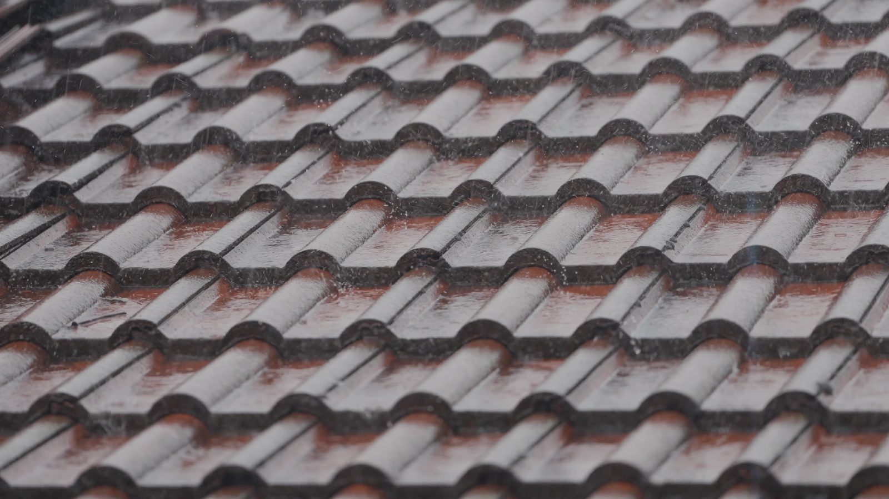

Fuite de toiture : que faire et qui appeler ?
Une tache au plafond, des gouttes qui tombent pendant l'averse : une fuite de toiture demande de réagir vite, sans se mettre en danger. Voici les bons gestes en attendant le couvreur, comment déclarer le sinistre à votre assurance et qui contacter à Metz et en Moselle.

Les bons gestes tout de suite
- Récupérez l'eau avec une bassine ou un seau, et protégez le sol avec des serpillières.
- Éloignez ou couvrez les meubles, les appareils électriques et les objets de valeur.
- Coupez l'électricité de la pièce si l'eau approche d'un plafonnier, d'une prise ou d'un interrupteur.
- Prenez des photos des traces d'eau, du plafond et des objets abîmés : elles serviront pour l'assurance.
- Ne montez pas sur le toit, surtout sous la pluie ou par grand vent : une toiture mouillée est très glissante.
Une fuite en cours à Metz ou en Moselle ? Appelez-nous directement au 03 54 73 06 45. En cas d'urgence, nous intervenons dans les plus brefs délais.
Qui appeler en cas de fuite de toiture ?
Si l'eau vient du toit, c'est un couvreur qu'il faut appeler : il monte sur la toiture, trouve l'origine de l'infiltration et la répare. L'endroit où l'eau apparaît au plafond n'est d'ailleurs pas toujours celui où elle entre : l'eau peut courir le long de la charpente avant de couler.
- Vous êtes propriétaire d'une maison : contactez un couvreur, puis votre assureur.
- Vous êtes locataire : prévenez sans attendre votre propriétaire, ainsi que votre assureur.
- Vous êtes en copropriété : la toiture fait partie des parties communes, prévenez le syndic.
D'où vient la fuite ? Les causes les plus fréquentes
- Une tuile cassée, fissurée ou déplacée, souvent après un coup de vent ou une tempête.
- Un solin abîmé, à la jonction entre la couverture et un mur ou une cheminée.
- La souche de cheminée, un point où les infiltrations commencent souvent.
- Une noue ou un faîtage à reprendre, là où l'eau se concentre ou au sommet du toit.
- Une gouttière bouchée par les feuilles et la mousse : l'eau déborde et s'infiltre.
- Le raccord d'une fenêtre de toit, quand l'étanchéité autour du châssis a vieilli.
Une fuite isolée se répare souvent localement. Quand les fuites se multiplient sur une couverture usée, une rénovation de toiture peut devenir plus intéressante que des réparations à répétition. Après la visite, nous vous disons ce qui est vraiment nécessaire.
Déclarer la fuite à votre assurance
Les dégâts causés à l'intérieur par l'eau (plafond, peintures, mobilier) relèvent en général de la garantie dégât des eaux de votre assurance habitation. Si la fuite fait suite à une tempête, c'est la garantie tempête qui s'applique.
- Déclarez le sinistre rapidement : le délai figure dans votre contrat et ne peut pas être inférieur à 5 jours ouvrés.
- Joignez vos photos et la liste des biens abîmés.
- Gardez le devis et la facture du couvreur : ils décrivent l'origine de la fuite et les travaux réalisés.
À savoir : la réparation d'une toiture usée faute d'entretien est souvent exclue des contrats. Les conditions varient d'un assureur à l'autre : relisez votre contrat ou appelez votre conseiller. Un entretien régulier de la toiture reste la meilleure façon d'éviter les fuites.
★★★★★
Intervention très rapide pour remettre en place des tuiles suite à la tempête d'octobre 2026. Je ferai à nouveau appel à son entreprise pour son professionnalisme et son sérieux.
Questions fréquentes
Qui appeler en cas de fuite de toiture ?
Un couvreur : c'est lui qui trouve l'origine de l'infiltration sur la toiture et la répare. Si vous êtes locataire, prévenez aussi votre propriétaire. En copropriété, la toiture fait partie des parties communes : prévenez le syndic.
Une fuite de toiture est-elle prise en charge par l'assurance ?
Les dégâts causés à l'intérieur par l'eau sont en général couverts par la garantie dégât des eaux de l'assurance habitation, et les dommages dus à une tempête par la garantie tempête. La réparation d'une toiture usée faute d'entretien est souvent exclue. Vérifiez votre contrat et déclarez le sinistre rapidement.
Faut-il monter sur le toit pour arrêter une fuite ?
Non. Une toiture mouillée est glissante et une chute peut être grave. Limitez les dégâts depuis l'intérieur et laissez l'intervention sur la toiture à un professionnel équipé.
Une fuite de toiture à Metz ou en Moselle ?
Recherche de fuite, remplacement de tuiles, réparation de solin ou de zinguerie. Appelez-nous au 03 54 73 06 45.
Appeler le 03 54 73 06 45 Couverture
Rénovation et réparation de toiture à Metz
Rénovation de toiture en tuiles, ardoises ou zinc, réparation de fuite et intervention d'urgence.
Voir la prestation →
Couverture
Rénovation et réparation de toiture à Metz
Rénovation de toiture en tuiles, ardoises ou zinc, réparation de fuite et intervention d'urgence.
Voir la prestation →
 Démoussage et entretien
Démoussage et nettoyage de toiture à Metz
Démoussage et nettoyage à la main sans haute pression, traitement hydrofuge professionnel et nettoyage des gouttières.
Voir la prestation →
Démoussage et entretien
Démoussage et nettoyage de toiture à Metz
Démoussage et nettoyage à la main sans haute pression, traitement hydrofuge professionnel et nettoyage des gouttières.
Voir la prestation →